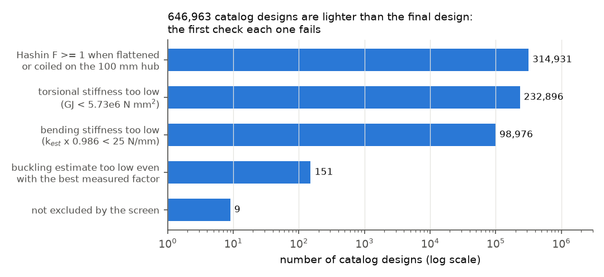
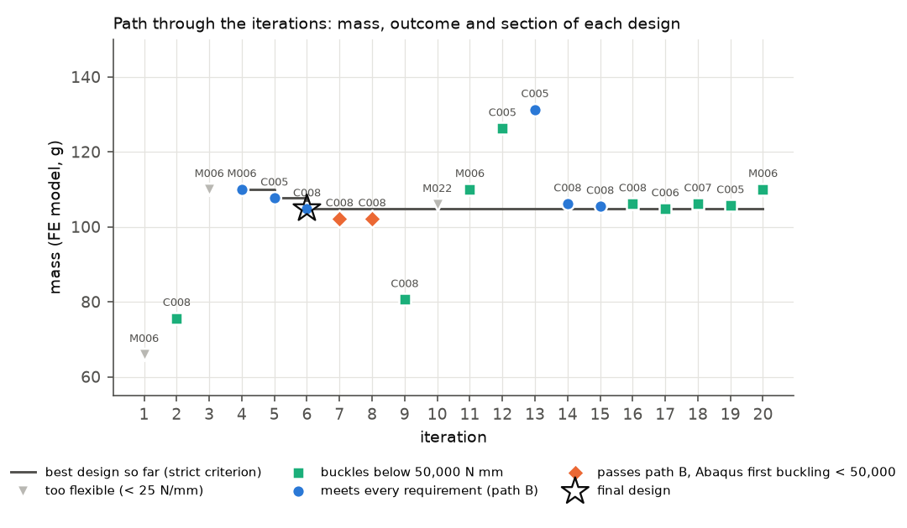
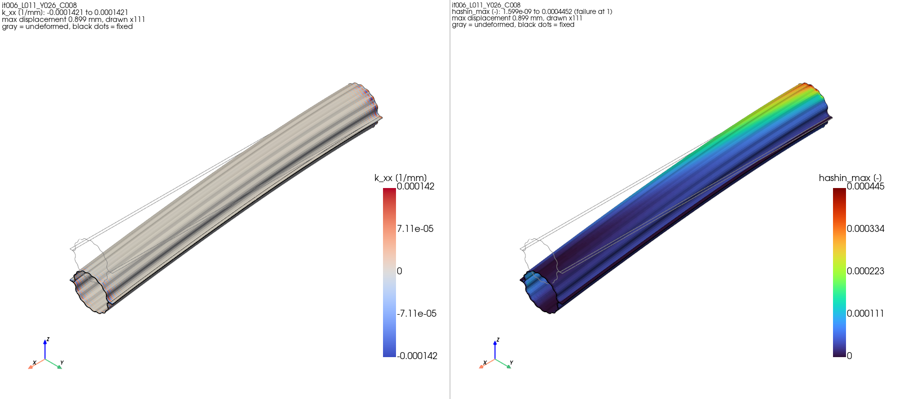
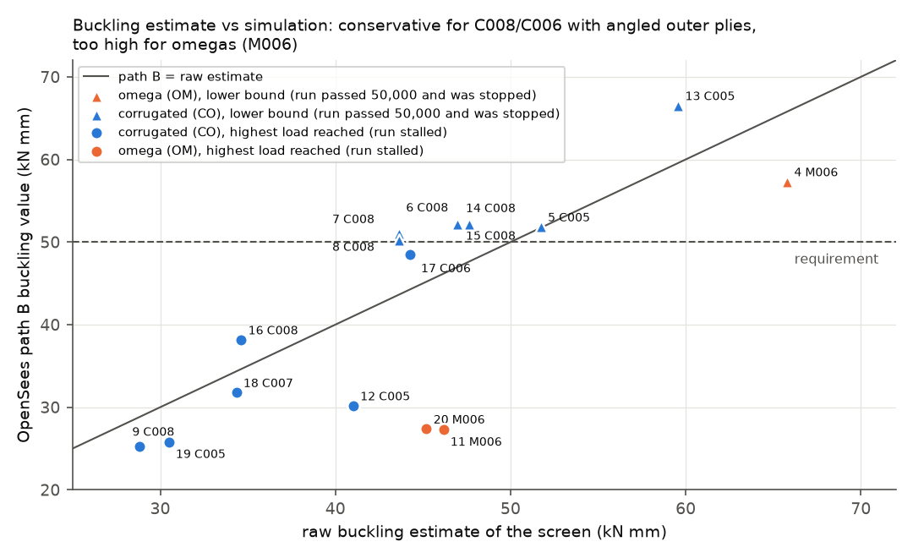
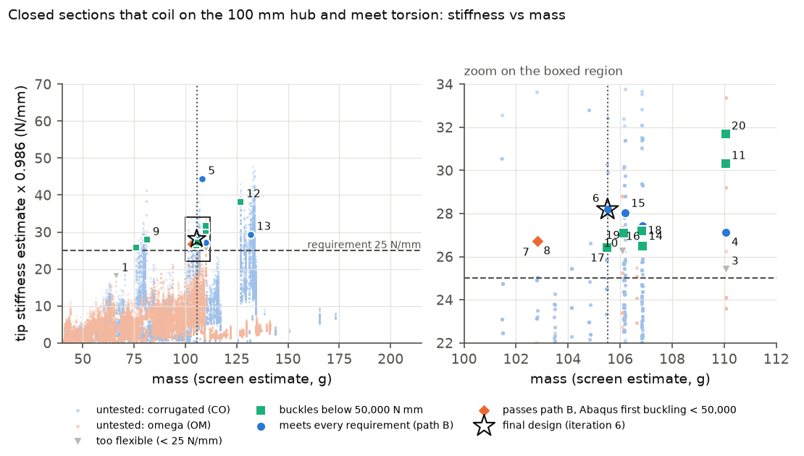
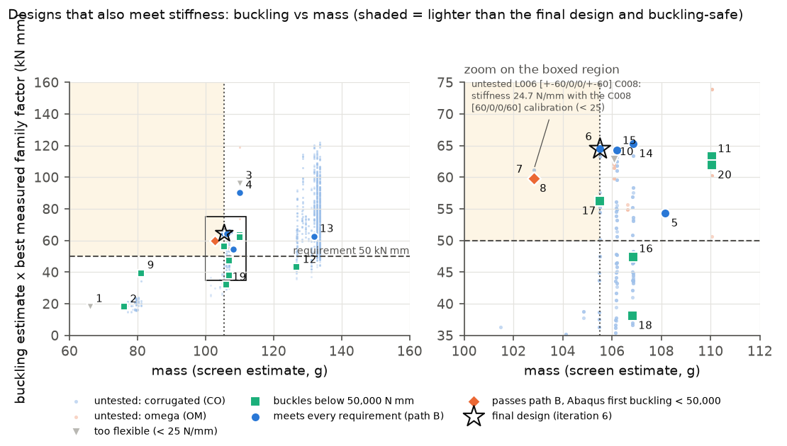

The prompt asked for a composite boom of minimum mass, built from any material, layup and cross-section in the project catalogs, with these requirements (units N, mm):
| load case / requirement | how it was modelled | pass condition |
|---|---|---|
| Length | L = 1000 mm, clamped root, rigid tip fixture | L = 1000 mm |
| Transverse bending stiffness: ≤ 1 mm deflection under a 25 N tip load | linear cantilever, 25 N tip load along z (user: stiffness load along z) | k = 25 / uz ≥ 25 N/mm |
| No buckling under a 50 N lateral bending load (cantilever) | root moment 50 N x 1000 mm = 50,000 N mm about z (user: lateral = y). Applied as a uniform end moment, which puts the root moment along the whole boom (conservative). Imperfection-seeded nonlinear path in OpenSees (path B); later the first bifurcation in Abaqus | buckling moment ≥ 50,000 N mm |
| Torsional stiffness: ≤ 1° twist under 100 N mm end torque | linear cantilever, 100 N mm torque at the rigid tip (step added to study.py at the user's request) | tip twist ≤ 1° (GJ ≥ 5.73 x 106 N mm2) |
| Coils on a 100 mm hub | hub radius 100 mm (user answer); Hashin index of the flattened section and of the section coiled on the hub | Fflat < 1 and Fhub < 1 |
| No material failure in any simulation | Hashin 2D criterion in every ply under the 25 N load, the 100 N mm torque and the 50 N lateral tip load | F < 1 in each case |
Other instructions: at most 16 CPU cores (Abaqus jobs capped at 8 by the shared-server protocol), nothing written outside the project folder, a status update every 15 minutes, all new code in Code for Project/11-17-26 (Tara), and Abaqus verification. During the study the user also asked to: add torsion to study.py; commit every tool change; run to iteration 20; test whether the buckling estimate is conservative for some section family; include one balanced laminate; try an 81 g long shot without changing the catalog; check the final design in Abaqus under every OpenSees load case; let failing buckling runs go for 2 hours (longer if they look like passing); and finally use the strict buckling criterion (first bifurcation above 50,000 N mm).
The study ran through study.py, a state machine that enforces the protocol: requirements → screen → choose a design → laminate, model, plots, Hashin failure, extra load cases, buckling, objective/constraints → record → mesh convergence and Abaqus verification when due. OpenSeesPy shell models (ASDShellQ4) did the analysis; Abaqus/CAE (S4R) scripts were generated from the same models and run through the server's runner script. Shortcomings found in the tools were fixed, committed and pushed as they appeared:
The catalogs give 36 usable materials (2 more carry a caution note and were excluded), 199 symmetric 3-5 ply layups and 100 cross-sections (25 each of tape springs, TRACs, omegas and corrugated booms): 716,400 combinations. Each was screened with closed-form estimates: mass; Timoshenko tip stiffness; the bending-buckling moment; torsional stiffness (Bredt for closed cells, St Venant for open sections); and the Hashin index of the flattened and coiled section. Screen margins were deliberately loose (stiffness 0.85x, buckling 0.5x, torsion 0.85x closed / 0.5x open) so that near-misses were kept for the FE to decide. 3,322 combinations survived: 3,254 corrugated and 68 omega, and no open section.
| section family | combinations | fail torsion | best GJ / required | fail stiffness | fail buckling | fail coiling | pass |
|---|---|---|---|---|---|---|---|
| tape spring (open) | 179,100 | 179,100 | 0.24% | 179,100 | 179,100 | 80,289+ | 0 |
| TRAC (open) | 179,100 | 179,100 | 0.86% | 179,092 | no estimate | 76,357+ | 0 |
| omega / lenticular (closed) | 179,100 | 44,638 | 838x | 179,031 | 140,041 | 80,115+ | 68 |
| corrugated (closed) | 179,100 | 57,334 | 2,728x | 159,128 | 83,291 | 125,816+ | 3,254 |
Open sections were eliminated by the torsion requirement. An open thin wall carries torque only by St Venant shear flow through its thickness, GJ ≈ G Σ b t3/3, which for a 0.1-0.2 mm laminate is tiny. The best tape spring in the catalog reaches 0.24% of the required GJ and the best TRAC 0.86%: even the best of them would twist about 410° (tape spring) and 120° (TRAC) instead of 1°. A closed cell carries torque by a shear flow around the cell (Bredt, GJ = 4A2G t / ∮ds), so omegas and corrugated booms exceed the requirement by up to ~2,700x. Tape springs also fail the stiffness and buckling estimates everywhere, so they were out on three counts. The torsion requirement therefore decided the section class without any FE run: only omega (OM) and corrugated (CO) booms were candidates. Among the closed sections, the stiffness requirement removed most of the remaining designs (thin omegas are too flexible about z), and coiling on the 100 mm hub removed the thick or stiff-fibre laminates on tightly curved sections.

Each iteration took one design from the screen and ran the full chain. The next design was chosen from what the previous runs taught: the screen's list of untried designs lighter than the current best, re-ranked with the estimates calibrated against the FE results so far (stiffness FE/estimate 0.91-0.99 depending on the laminate; buckling factors per family, section 6), changing one variable at a time where possible. After iteration 7 the remaining iterations followed a plan agreed with the user (investigations/PLAN_iterations_8-20.md), whose main goal was the user's question: is the buckling estimate conservative for some family, which could unlock a lighter boom?

Iteration 1 (66.0 g omega) was the lightest screen candidate and the first full test of the chain. Its stiffness came out at 16.9 N/mm instead of the predicted 28.8: shear deformation was missing from the screen. After the Timoshenko fix, iteration 2 (75.6 g, a corrugated C008 with a higher-shear-modulus material) met stiffness but buckled at only 6.5-12.7 kN mm. Thin 3-ply closed sections buckle locally at a fraction of the requirement, so the segment linear-buckling fit was added to the screen. Iteration 3 went to a 5-ply omega for buckling margin but missed stiffness by 1.1% (24.7 N/mm). Iteration 4 changed only the layup (outer 30° plies) and became the first feasible design at 110.0 g. Iteration 5 (107.7 g, C005 [30/0/0/30]) was the only predicted-feasible design lighter than that, and passed.
At the user's request the study then tested whether the buckling estimate is conservative for some family. C008 had the most lighter designs that failed only the buckling estimate. Iteration 6 (104.9 g, [60/0/0/60], estimate 6% short) passed at ≥ 52.2 kN mm, so the C008 estimate was at least 11% conservative. Iteration 7 (102.2 g, [45/0/0/45], estimate 13% short) was the last plausible lighter design and also passed, at ≥ 51.0 kN mm. Iteration 8, its mirror [-45/0/0/-45], checked that the unbalanced layup's bend-twist coupling did not make buckling depend on the ply sign; it passed at ≥ 50.2. At this point iteration 7 was the best under the path-B criterion.
Iteration 9 was the user's 81 g long shot ([30/0/30] C008, 21% lighter, estimate 42% short): it stalled at 25.3 kN mm, which settled that no thin 3-ply design could work. Iterations 10-12 calibrated the estimate inside the domain of its fit (all-0 layups). Iteration 10 (M022) missed stiffness, so iteration 11 repeated the test on M006: the omega stalled at 27.3 kN mm against an estimate of 46.2, showing that the estimate is about 40% too high for omegas. Iteration 12 (C005 all-0) was in the LBA calibration set, so its stall at 30.2 gave the knockdown from perfect-shell LBA to the imperfect path for a corrugated boom. Iteration 13, the balanced laminate the user asked for ([30/-30/0/-30/30] C005), passed comfortably but weighs 131.3 g: removing the coupling of an unbalanced layup costs about 25% mass here.
Iterations 14-15 repeated the winning C008 [60/0/0/60] with two other materials; both passed (≥ 52.1 and 52.2 kN mm), so the margin is not specific to one material. Passing runs only give lower bounds, so iterations 16-20 deliberately chose designs expected to buckle, to measure real strengths: C008 [30/0/0/30] (38.2), C006 [60/0/0/60] (48.5, so the C008 conservatism largely carries over to C006 but not enough to pass), C007 (31.8), C005 [0/30/30/0] (25.8) and an off-axis omega (27.4, stopped at the 2-hour limit). These populate the calibration in section 6.
| it | material | layup | section | mass g | k N/mm | why it was tested | outcome |
|---|---|---|---|---|---|---|---|
| 1 | L028 M55J/PAEK | Y001 [0/0/0] | M006 (OM) | 66.0 | 16.9 | Lightest screen candidate (stiffest material per mass, thinnest layup, lightest closed omega). Also the end-to-end test of the chain including the new torsion/lateral load-case step. | too flexible: k = 16.9 N/mm |
| 2 | L038 M30SC/PEEK thin-ply | Y001 [0/0/0] | C008 (CO) | 75.6 | 25.0 | New family (corrugated) with a higher-G12 material, chosen because iteration 1 showed shear deformation is ~39% of the tip deflection. | buckled: stalled at 6.5-12.7 kN mm |
| 3 | L028 M55J/PAEK | Y047 [0/45/0/45/0] | M006 (OM) | 110.0 | 24.7 | Back to the verified omega, 5 plies for the 50 kN mm moment; ±45 plies added for shear stiffness. Buckling estimate +40% to cover the expected knockdown. | too flexible: k = 24.7 N/mm |
| 4 | L028 M55J/PAEK | Y095 [30/0/0/0/30] | M006 (OM) | 110.0 | 26.7 | Change one variable from it003 (layup): outer 30° plies raise transverse bending stiffness of the walls (D22) and the buckling moment while keeping k. | feasible (B ≥ 57.3 kN mm) |
| 5 | L028 M55J/PAEK | Y024 [30/0/0/30] | C005 (CO) | 107.7 | 42.9 | Of 613 untried designs lighter than 110 g only L028 [30/0/0/30] C005 was predicted feasible (buckling +3%). | feasible (B ≥ 51.9) |
| 6 | L011 T1100G/3960 | Y026 [60/0/0/60] | C008 (CO) | 104.9 | 27.8 | User request: test whether the buckling estimate is conservative for some family. C008 has the most lighter designs that fail only the buckling estimate; this one was 6% short. | feasible, final design (B ≥ 52.2; Abaqus 55.4-56.4) |
| 7 | L006 IM7/MTM45-1 | Y025 [45/0/0/45] | C008 (CO) | 102.2 | 26.5 | it006 showed the C008 estimate is ≥ 11% conservative; this lighter design was 13% short, so it passes only if the margin is larger. The last plausible lighter design. | passes B (≥ 51.0) but Abaqus first buckling 48.4-49.5: fails strict |
| 8 | L006 IM7/MTM45-1 | Y029 [-45/0/0/-45] | C008 (CO) | 102.2 | 26.5 | Mirror layup of it007 (same mass): the unbalanced layup has bend-twist coupling, so lateral buckling could depend on the sign of the ±45 plies; it007 passed by only 2%. | passes B (≥ 50.2) but Abaqus first buckling 48.4-49.5: fails strict |
| 9 | L028 M55J/PAEK | Y009 [30/0/30] | C008 (CO) | 80.6 | 27.8 | User-requested long shot: 21% lighter, buckling estimate 42% short; passes only if C008 is ~1.7x conservative. Otherwise gives a real off-axis C008 strength. | buckled: stalled at 25.3 |
| 10 | L028 M55J/PAEK | Y031 [0/0/0/0/0] | M022 (OM) | 106.1 | 24.6 | Omega calibration with an all-0 layup (inside the domain of the buckling fit). | too flexible (k_FE 24.6): buckling skipped |
| 11 | L028 M55J/PAEK | Y031 [0/0/0/0/0] | M006 (OM) | 110.0 | 28.1 | Replacement for it010 (which missed stiffness, so its buckling was skipped): same purpose on the verified M006 omega. | buckled: stalled at 27.3 |
| 12 | L038 M30SC/PEEK thin-ply | Y031 [0/0/0/0/0] | C005 (CO) | 126.3 | 35.5 | Corrugated calibration inside the fit domain: this exact design was in the 35-run segment-LBA calibration set, so its path B gives the LBA-to-path-B knockdown directly. | buckled: stalled at 30.2 |
| 13 | L011 T1100G/3960 | Y107 [30/-30/0/-30/30] | C005 (CO) | 131.3 | 29.4 | User request: one balanced laminate (no extension-shear / bend-twist coupling) to show its mass cost. | feasible (B ≥ 66.6), but +25% mass |
| 14 | L030 T1100GC/PAEK | Y026 [60/0/0/60] | C008 (CO) | 106.2 | 27.0 | Robustness: the passing C008 [60/0/0/60] design with a different material (L030). | feasible (B ≥ 52.1) |
| 15 | L002 IM7/8552 | Y026 [60/0/0/60] | C008 (CO) | 105.5 | 27.6 | Robustness: a third material (L002) on C008 [60/0/0/60]. | feasible (B ≥ 52.2) |
| 16 | L029 AS4D (L029) | Y024 [30/0/0/30] | C008 (CO) | 106.2 | 26.4 | A C008 4-ply off-axis design expected to buckle well below 50 kN mm, to measure a REAL strength (the passing runs only gave lower bounds). | buckled: stalled at 38.2 |
| 17 | L011 T1100G/3960 | Y026 [60/0/0/60] | C006 (CO) | 104.9 | 25.7 | C006 family probe with the winning layup [60/0/0/60]: does the C008 conservatism carry over to another corrugated family? It is 0.03 g heavier than it006. | buckled: stalled at 48.5 |
| 18 | L030 T1100GC/PAEK | Y024 [30/0/0/30] | C007 (CO) | 106.2 | 26.5 | C007, the last corrugated family not run, same layup as it005/it016 so the families compare directly. | buckled: stalled at 31.8 |
| 19 | L017 IM7 (L017) | Y017 [0/30/30/0] | C005 (CO) | 105.7 | 26.5 | A real C005 off-axis strength (it005 passed, lower bound only). | buckled: stalled at 25.8 |
| 20 | L028 M55J/PAEK | Y033 [0/0/45/0/0] | M006 (OM) | 110.0 | 30.4 | A real off-axis omega strength (it004 passed, lower bound only; it011 showed the omega estimate is too high). | buckled: stalled at 27.4 (stopped at 2 h) |
Buckling values in kN mm. "B ≥" = the OpenSees path passed the requirement and was stopped there (lower bound); "stalled" = highest converged load before the path stopped converging.
The protocol asks for 5-10 Abaqus verifications per study, never blocking the loop. They were placed where an independent check would change a decision: at the start (to trust the chain), at each new section family that became the best design, when the results looked suspicious, and for the final candidates. Each Abaqus script was generated from the OpenSees model and run here (8 CPUs for the buckling jobs); for the linear cases a separate comparator agent compared the two result files without seeing either model's code.
| # | design | cases | why then | what it showed |
|---|---|---|---|---|
| 1 | it001 L028 [0/0/0] M006 | static (25 N) | First design of the study, first omega: checks the whole chain (laminate, mesh, rigid tip, Timoshenko reference) before trusting any result. | agree: 81/82 checks; only the drilling rotation at the webs differs (element formulation) |
| 2 | it006 L011 [60/0/0/60] C008 | static | First feasible corrugated design and new best: first check of a closed corrugated section with bonded webs. | agree: tip uz -0.12%; flange ply stresses 1-5% RMS; differences only in the end zones |
| 3 | it004 L028 [30/0/0/0/30] M006 | static | Second omega, first 5-ply off-axis laminate (required minimum of 5 verifications spread over families). | agree: displacements, curvatures, ply stresses within 0.1-1% |
| 4 | it012 L038 [0/0/0/0/0] C005 | static | Sanity flag: FE/beam-theory stiffness ratio 0.916 vs 0.973 for it006. Was the OpenSees model wrong? | agree: tip uz -0.13%. The low ratio is physics of low-G all-0 laminates (shear-area estimate), not a model error |
| 5 | it007 L006 [45/0/0/45] C008 | all 4 cases | It was the best design under the path-B criterion; the user asked that the final design be checked in every OpenSees load case. | linear cases agree (0.1-0.5%); buckling: Abaqus first bifurcation 48.4-49.5 kN mm, 1-3% below 50: inconclusive / fails strict |
| 6 | it006 L011 [60/0/0/60] C008 | all 4 cases | After the user chose the strict "no local buckling" criterion, the next-lightest feasible design was checked in every case. | agree: uz -0.12%, rx +0.36%, uy +0.11%; first bifurcation 55.4-56.4 kN mm (+11-13%) |
| 7 | it008 L006 [-45/0/0/-45] C008 | buckling | User question: had the mirror of it007 actually been checked? It had only been assumed to fail. | fails strict: 48.4-49.5 kN mm, identical to it007 within 0.001% |
What we learned. (1) For linear response the OpenSees models are accurate: tip displacements and twist agree to 0.1-0.5% and ply stresses to a few percent; the only differences are in the rigid-end zones and in the drilling rotation, which the two element formulations treat differently. (2) Verification 4 showed that a surprising stiffness ratio was physics (low shear modulus of all-0 laminates), not a modelling error, so the calibration could be trusted. (3) The most important lesson came from buckling. The OpenSees criterion follows an imperfect nonlinear path and passes a design if that path climbs past 50,000 N mm. For iterations 7 and 8 the path did, but Abaqus found that the perfect shell first bifurcates at 48.4-49.5 kN mm: a local mode of the flat bonded tab on the compressed side, after which the boom keeps carrying load. Both codes see the same instability (within 3-5%), so this is not a disagreement between codes; it is a question of what "does not buckle" means. The user chose the strict meaning (no local buckling), which rejected iterations 7 and 8 and made iteration 6 the final design, with a first bifurcation 11-13% above the requirement. (4) Iteration 8 had at first been marked as failing by symmetry with iteration 7, without an Abaqus run; when the user asked, it was run and gave the same values to 0.001%.

Every buckling run compared the OpenSees path with the screen's raw estimate. The estimate is conservative by at least 9-17% for C008 (and about 9% for C006) with angled outer plies, roughly right for C005 and C007 (0.85-1.05), and about 40% too high for omegas. This answers the user's question with a yes for C008/C006, but the extra margin could not be exploited: the designs it would have allowed (iterations 7 and 8) fail the strict local-buckling check.

Only 20 of 716,400 combinations were simulated, so the claim that iteration 6 is the optimum rests on the screen. To make that argument as strong as possible, every combination was re-checked using the most optimistic numbers the study measured (investigations/lighter_than_best.py): stiffness estimate x 0.986, the highest FE/estimate ratio of all runs; and buckling estimate x the best measured factor of its family (1.37 for C008 and for families never run). Masses are compared on the screen's own mass formula (it overestimates the FE mass by about 0.6% for all designs alike).
| design (material / layup / section) | layup | mass g (screen) | k x 0.986 | buckling x factor | why it is not better than iteration 6 |
|---|---|---|---|---|---|
| L006 / Y025 / C008 | [45/0/0/45] | 102.8 | 26.7 | 59.8 | tested: iteration 7. Abaqus first buckling 48.4-49.5 kN mm: fails the strict criterion. |
| L006 / Y026 / C008 | [60/0/0/60] | 102.8 | 25.1 | 61.2 | stiffness: with the FE/estimate ratio measured for C008 [60/0/0/60] (0.970-0.973 in it006/014/015) k = 24.7 N/mm < 25. Passes only with the single best ratio of the whole study (0.986, a balanced C005). |
| L006 / Y029 / C008 | [-45/0/0/-45] | 102.8 | 26.7 | 59.8 | tested: iteration 8. Abaqus first buckling 48.4-49.5 kN mm: fails the strict criterion. |
| L006 / Y030 / C008 | [-60/0/0/-60] | 102.8 | 25.1 | 61.2 | mirror of the row above: same stiffness, k = 24.7 N/mm < 25. |
| L011 / Y025 / C006 | [45/0/0/45] | 105.5 | 27.9 | 55.3 | same FE mass as it017 (0.03 g heavier than it006, so cannot be lighter); its buckling estimate (43.5) is below it017's (44.3), which buckled at 48.5. |
| L011 / Y026 / C006 | [60/0/0/60] | 105.5 | 26.4 | 56.2 | tested: iteration 17. Buckled at 48.5 kN mm. Also 0.03 g heavier than it006 in the FE model. |
| L011 / Y027 / C006 | [90/0/0/90] | 105.5 | 25.0 | 50.2 | stiffness: [90/0/0/90] on C006 with the C006 ratio (0.960, it017) gives k = 24.3 N/mm < 25; also 0.03 g heavier than it006. |
| L011 / Y029 / C006 | [-45/0/0/-45] | 105.5 | 27.9 | 55.3 | mirror of the row above. |
| L011 / Y030 / C006 | [-60/0/0/-60] | 105.5 | 26.4 | 56.2 | mirror of iteration 17: same mass and stiffness; it017 buckled at 48.5 kN mm. |
The two strongest remaining candidates are the untested L006 [±60/0/0/±60] C008 pair (102.8 g on the screen). Their stiffness estimate is 25.4 N/mm; the three [60/0/0/60] C008 runs measured FE/estimate = 0.970-0.973, giving 24.7 N/mm, 1.1% short of the requirement. They would only pass if this layup behaved like the stiffest-ratio balanced C005 laminate, which no C008 run did. Their buckling estimate (44.7 kN mm) is also close to iterations 7 and 8, which failed the strict criterion by 1-3%. So the remaining risk that a lighter feasible design was missed is small and limited to this pair; running one of them would settle it.


REPORT.md (summary written by study.py), ledger.csv (all iterations), final/ (the final design's model, scripts and plots), iterations/itNNN/ (every model, log, result and Abaqus comparison), screen/ (screening output), investigations/ (calibration runs, design-space plots and checks, this report's generator narrative_report.py, and the plan of iterations 8-20).